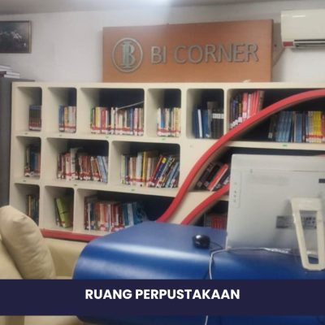

Tentang kami
Tentang Kami
-
Awal Berdiri sebagai Institut Teknologi Dirgantara (ITD) – 1987–1989
Inisiatif pendirian perguruan tinggi berfokus dirgantara dimulai pada 1970-an oleh TNI AU...
-
Transformasi menjadi Sekolah Tinggi Teknologi Dirgantara (STTD) – 1989–1998
Pada 19 Mei 1989, Kementerian Pendidikan secara resmi mendaftarkan institusi ini sebagai STTD...
-
Peningkatan Status Universitas – Universitas Suryadarma (1999)
Dengan perkembangan pesat, STTD menjadi Universitas Suryadarma lewat SK No. 109/D/O/1999...
-
Pembaruan Nama untuk Identitas – 2016
Menjadi Universitas Dirgantara Marsekal Suryadarma melalui SK No. 147/KPT/I/2016...
-
Penambahan Fakultas Ilmu Kesehatan – 2023
AKPER RSP TNI AU bergabung menjadi Fakultas Ilmu Kesehatan (FIKES)...
Fakultas dan Sekolah


Rektor Universitas Suryadarma

Dr. Sungkono, S.E., M.Si.
Dr. Syamsunasir, S.Sos, MM, CFrA

Dr. I Dewa Ketut Kerta Widana, SKM, MKKK
Dr. Agus Purwo W., S.E, M.M
Fasilitas Universitas Suryadarma

Lab Komputer

Lab Multimedia

Lab Aerodinamika

Layanan Ambulans

Parkiran

Masjid

Tempat Olahraga

Perpustakaan

Welding Workshop